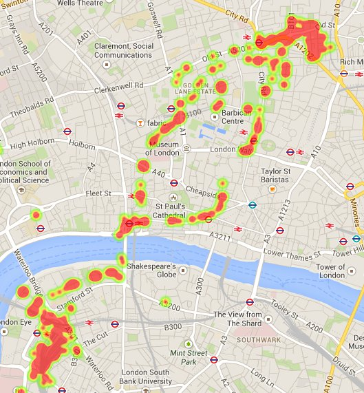
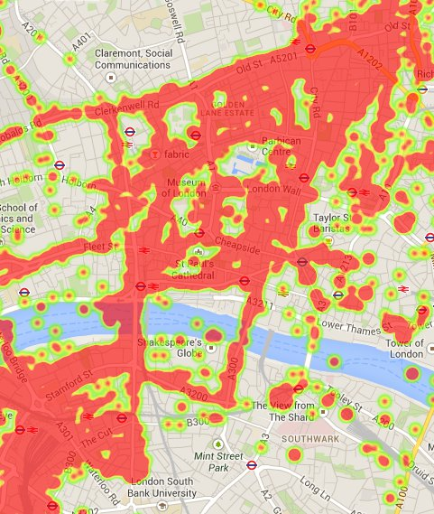

Lunchtime hack: My cycling routes
James Uther
2014-08-28
Like most Android users (because I think it's the default) Google tracks my location. Thankfully, they provide a way for me to view and edit the data collected (Thus satisfying some major rules of personal data collection - well done!). But the interface on location history is clunky as a visualisation, so let's spend lunch seeing if we can do better.
We start at the data - Location History and our first discovery is that since the closure of Latitude, the API to the data has been removed. We're left with a 'download KML' link that will allow you to download a maximum of 30 days data at a time. Grrr. Anyway, let's get the data for the last month.
A really quick way of seeing what we have is to simply drag the .kml file into Google Earth. It even gives a nice time range selection widget, and a kind of fading effect where points outside the selected time are dimmed but not hidden altogether. So here's a relatively nice overview of my various cycle routes between Waterloo and LShift:
If we do select the entire time range it gets a bit messy, and that's about all we can do with Google Earth:
{kind=link}
In the drive to replace Earth with Maps, it turns out that Google have added similar capabilities to Maps (a good overview here). Again, it's limited. We can style the map a bit more, but we can't style the location data in any meaningful way.
Where else can we go?
Fusion tables supposedly has a nice KML layer and heatmaps. But a quick try shows that it doesn't understand some new elements (the gx:Track element) in the KML, so no go there.
The javascript maps API has a nice heatmap layer (docs) that looks like it will do a good job, so let's give that a go. Upload the KML to a public dropbox folder, grab the public URL of the file, head over to jsfiddle and build a $.get that retrieves the file, grabs the gx:coord elements, builds up an array of points that can be consumed by the heatmap layer, and um, nothing much. BUT then you realise that there is heat around work and home and perhaps the intensity is being scaled depending on frequency which is leaving the less-travelled places too dim, so you set maxIntensity to 1: TaDa!

Here's the code. And no, this won't work because I've removed my location history for obvious reasons. But try substituting your own (edit in jsfiddle)
$(document).ready(function () {
$.get("https://dl.dropboxusercontent.com/u/2/history-07-27-2014.kml", {
dataType: 'xml'
}, function (data) {
var heatmapData = [];
$(data).find("coord").each(function (i, e) {
var h = $(e).html().split(' ');
heatmapData.push(new google.maps.LatLng(parseFloat(h[1]), parseFloat(h[0])));
});
var london = new google.maps.LatLng(51.515, -0.101);
map = new google.maps.Map(document.getElementById('map-canvas'), {
center: london,
zoom: 15,
mapTypeId: google.maps.MapTypeId.STREET
});
var pointArray = new google.maps.MVCArray(heatmapData);
var heatmap = new google.maps.visualization.HeatmapLayer({
data: pointArray,
maxIntensity: 1
});
heatmap.setMap(map);
})
});
Then I realise that Takeout allows you to download location history data, so kick that off, but it's very asynchronous, so back to work and we'll have a look tomorrow.
Next lunch:
So Takeout gives you all your data, with more attributes (accuracy and a guess as to activity type) in a big json file. Let's upload that to dropbox. It's a fair size so come back after a cup of tea.
It mostly boils down to lots of
{
"timestampMs" : "1409036497572",
"latitudeE7" : xx1453,
"longitudeE7" : -xx934,
"accuracy" : 30
}
chunks, embedded in various arrays which represent who-knows-what, and where l*E7 seems to be the value multiplied by 10**7. We want to grab all the chunks in what looks like a shallow structure - how about underscore and _.flatten?
Off to jsfiddle again. Back to a text editor because playing in jsfiddle with a 150Mb file is not that easy, so cut the file down to a small amount of test data. And the initial results look good. Change the fiddle to the full data set thusly:
$(document).ready(function () {
$.getJSON("https://dl.dropboxusercontent.com/u//LocationHistory.json", function (data) {
var heatmapData = _.flatten(data)
.filter(function (i) {
return i.hasOwnProperty('timestampMs');
})
.map(function (c) {
return new google.maps.LatLng(
parseFloat(c.latitudeE7) / 10000000, parseFloat(c.longitudeE7) / 10000000);
});
var london = new google.maps.LatLng(51.515, -0.101);
map = new google.maps.Map(document.getElementById('map-canvas'), {
center: london,
zoom: 15,
mapTypeId: google.maps.MapTypeId.STREET
});
var pointArray = new google.maps.MVCArray(heatmapData);
var heatmap = new google.maps.visualization.HeatmapLayer({
data: pointArray,
maxIntensity: 1
});
heatmap.setMap(map);
});
});
Aaand: A right mess.

So, too much data to be useful now. We could go and start filtering by these 'activities' (or 'activitys' depending on which googler wrote which part of the json marshaller it seems) and finding the cycling ones. Or there is a way of weighing data points that we could tie in with the accuracy measure. But it's time to eat.
(Originally here)